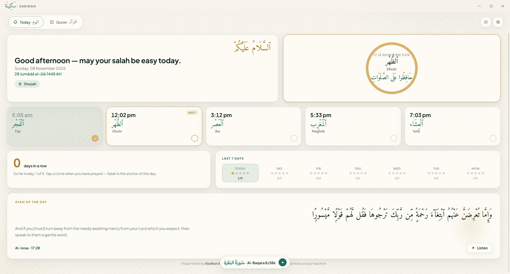
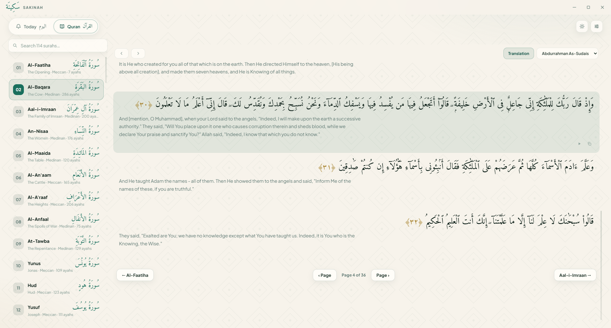
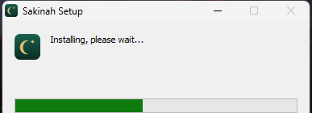
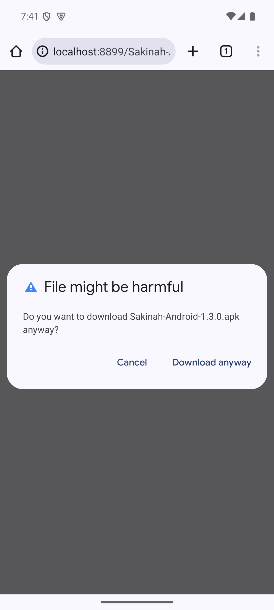
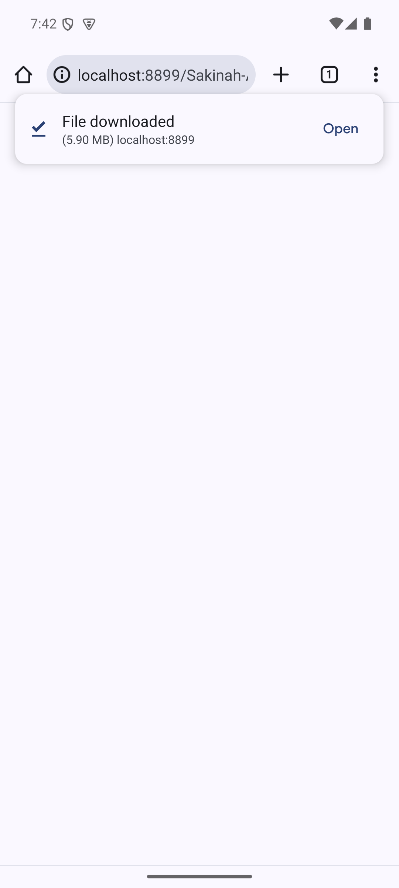
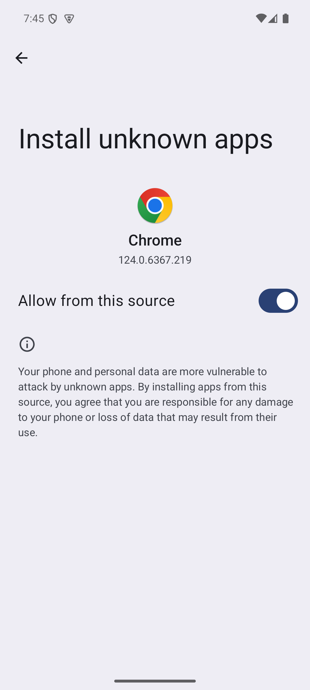
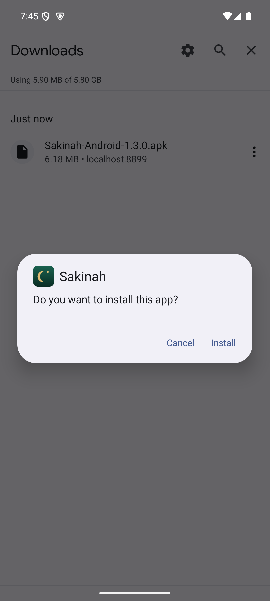

ٱلسَّلَامُ عَلَيْكُمْ
القرآن كاملًا ومواقيت الصلاة وسلسلة أيامك — تطبيق واحد هادئ
افتح سَكِينَة واقرأ حتى بدون إنترنت. يواصل التلاوة العمل أثناء تنقّلك بين التطبيقات — مع أزرار على شاشة القفل وفي السيارة. يصلك تنبيه لطيف عند كل صلاة. علّم كل صلاة أدّيتها وشاهد سلسلتك تنمو، بهدوء.
مجاني للأبد · بلا إعلانات · بلا حساب · لا شيء يُرسَل إلى أي مكان. تحقّق من نسختك ببصمات SHA-256 أدناه.
البصمة الكاملة (exe): BA36EB2F50A8FF80421C62CECFEECB008B592D687C41E924F6D1C6EA943B8917
البصمة الكاملة (apk): 3F6179095A00FF4625A1829E5ECBB72EF16B07C4D2AA6D6E0647452116AD6EF7

لماذا ستحبّه
كل ما ينبغي أن يفعله تطبيق قرآن — وما لا ينبغي أن يفعله.
تلاوة ترافقك أينما ذهبت أندرويد
واصل الاستماع أثناء مراسلة أصدقائك أو تصفّحك أو قفل الشاشة — خدمة صوت أمامية تتولّى التشغيل كما في تطبيقات الموسيقى. تظهر أزرار شاشة القفل والسيارة (بلوتوث): سورة · آية مع تشغيل/إيقاف/التالي/السابق، ويبقى زر الإيقاف دائمًا في متناول يدك على الشريط العائم — حتى بعد أن تغادر التطبيق وتعود إليه. نزّل أي سورة (⤓) أو القرآن كاملًا، ويعمل بلا إنترنت نهائيًا.
القرآن كاملًا دون إنترنت
جميع السور الـ114 بالرسم العثماني مع الترجمة الإنجليزية — النص وخط المصحف (أميري) لا يحتاجان الإنترنت أبدًا.
اقرأ كما تحب
صفحات مصحف تُقلَّب (تعمل مفاتيح الأسهم) أو تمرير حر — بدّل متى شئت. تجاوز الصفحة الأخيرة فتنتقل مباشرة إلى السورة التالية.
تنبيهات صلاة لطيفة
إشعار هادئ عند الفجر والظهر والعصر والمغرب والعشاء — في وقته أو قبله بدقائق. يعمل حتى والنافذة نائمة في شريط النظام.
تعليم الصلوات والسلاسل
انقر على الشريحة عندما تُتمّ الصلاة. شبكة 7 أيام تذكّر أسبوعك، وسلسلة تُظهر مدى ثبات أيامك. كل ذلك يبقى على جهازك.
مصمَّم للسكينة
سمة فاتحة وداكنة تتبعان نظام جهازك، تاريخ هجري وميلادي، وآية اليوم تستمع إليها بضغطة واحدة.
تنزيلات سريعة دون إنترنت
تنزيلات الأصوات تعمل على 14 اتصالًا متوازيًا — القرآن كاملًا في نحو 6–8 دقائق على خط عادي، ويمكن الاستئناف إذا أغلقت التطبيق في منتصف الطريق.
نظرة داخل التطبيق
لقطات حقيقية — لا شيء من نسج الخيال.

طريقة التثبيت
المنصّتان خطوة بخطوة — ولقطات الشاشة من المثبّتات الحقيقية.
🪟 ويندوز 10 و11
- نزّل المثبّت بالزر الأخضر أعلاه —
Sakinah-Setup-1.3.0.exeبحجم 91 ميجابايت، ملف واحد. - شغّله. إذا أظهر ويندوز نافذة «حمى Windows جهاز الكمبيوتر الخاص بك» فانقر معلومات إضافية ← تشغيل على أي حال — التحذير يعني فقط أن المثبّت غير موقّع رقميًا، وشهادة التوقيع مدفوعة يتخطّاها المطورون المستقلون.
- هذا كل شيء. بلا صلاحيات مسؤول، بلا خيارات، بلا إضافات مخفية — يثبّت سَكِينَة في مجلد مستخدمك ويفتح فورًا، مع اختصارات على سطح المكتب وفي قائمة ابدأ.

يعمل بهدوء في شريط النظام عند إغلاق النافذة — تنبيهات الصلاة تستمر؛ وانقر بزر الفأرة الأيمن على أيقونة الشريط للخروج تمامًا. تُكتشف مدينتك تلقائيًا لمواقيت الصلاة — يمكنك ضبطها يدويًا واختيار طريقة الحساب من الإعدادات ⚙.
🤖 أندرويد 7 وأحدث
- نزّل حزمة APK بالزر الداكن أعلاه —
Sakinah-Android-1.3.1.apkبحجم 5.9 ميجابايت فقط. - افتح الملف من إشعار اكتمال التنزيل أو من تطبيق الملفات. يطلب أندرويد السماح بالتثبيت من هذا التطبيق — فعّل خيار السماح من هذا المصدر (أمر طبيعي لأي تطبيق خارج متجر Play).
- انقر «تثبيت» ثم «فتح». كل السور الـ114 موجودة مسبقًا على الهاتف — صوت التلاوة وحده يُنزَّل من داخل التطبيق، عندما تريد.




بعد التثبيت، تعمل التلاوة والشاشة مطفأة، وتظهر أزرار التحكم على شاشة القفل وفي السيارة (بلوتوث). تنبيه لمستخدمي 1.3.0: هذه النسخة موقّعة بمفتاح دائم جديد، لذا احذف نسخة 1.3.0 القديمة أولًا ثم ثبّت هذه — ويستمر هذا مرة واحدة فقط؛ كل التحديثات القادمة ستُثبَّت فوق بعضها مباشرة.
أسئلة يطرحها الناس
هل هو مجاني فعلًا؟
نعم، تمامًا. نص القرآن من مشروع AlQuran Cloud، ومواقيت الصلاة من مشروع Aladhan، والتلاوات من شبكة islamic.network — كلها خدمات عامة مجانية. سَكِينَة لا تطلب شيئًا: لا تسجيل، لا مفاتيح، لا دفع، ولا جمع بيانات.
هل يعمل بدون إنترنت؟
نعم — وجزء أكبر منه الآن. قراءة القرآن كانت دائمًا دون إنترنت (كل سورة وترجمة وخط مضمّنة في التطبيق). والتلاوات تعمل دون إنترنت أيضًا بعد تنزيلها: كل ما استمعت إليه يُحفظ تلقائيًا، وضغطة إضافية تنزّل سورة كاملة — أو القرآن كله (نحو 450 ميجابايت مضغوطًا بالجودة الافتراضية، وحوالي 340 ميجابايت بأصغر إعداد) — مع شريط تقدّم واضح ووقت متوقع. أما مواقيت الصلاة واكتشاف الموقع فيحتاجان اتصالًا موجزًا (تُخزَّن المواقيت لما تبقّى من اليوم).
كيف تعمل تنزيلات التلاوة؟
في تبويب القرآن، لكل سورة زر ⤓ صغير، وهناك زر كبير باسم القرآن كاملًا أسفل البحث مباشرة. تُخزَّن التنزيلات على جهازك بصيغة Opus مضغوطة تشبه الأصل وتشغل نحو نصف المساحة (يمكنك اختيار أصغر إعداد، أو إبقاء MP3 العادي من الإعدادات ← التلاوة دون إنترنت). والتنزيل ينجو من إعادة التشغيل: أغلق التطبيق في منتصف الطريق وسيكمل من حيث توقف.
أين يُحفظ سجل تعليم صلواتي؟
على حاسوبك وحدك، في ملفك الشخصي. لا يُرفع أي شيء إلى أي خادم — التطبيق لا يملك نظام حسابات أصلًا.
لماذا يحذّرني ويندوز من المثبّت؟
لأنه غير موقّع رقميًا — توقيع الشيفرة شهادة مدفوعة تشتريها الشركات الكبرى. كثير من التطبيقات الصغيرة الصادقة تُوزَّع بدون توقيع. ويمكنك التأكد أن نسختك مطابقة لبصمة SHA-256 المعروضة قرب أعلى هذه الصفحة.
هل توجد نسخة أندرويد؟
نعم! زر احصل على تطبيق أندرويد 📱 أعلاه يعطيك Sakinah-Android-1.3.1.apk — مثبّت صغير بحجم 5.9 ميجابايت. كل السور الـ114 تُقرأ دون إنترنت على الهاتف. صوت التلاوة يُنزَّل من داخل التطبيق (تبويب القرآن ← ⤓ لكل سورة، أو زر «القرآن كاملًا») بتنزيل متوازٍ — نحو 6–8 دقائق للقرآن كله — وبعد التنزيل يعمل والشاشة مطفأة مع أزرار شاشة القفل والسيارة (بلوتوث).
كيف أُحدّثه؟
نزّل أحدث مثبّت من هذه الصفحة وشغّله — يستبدل النسخة القديمة في مكانها. وتُحفظ تعليمات صلواتك وإعداداتك. وعلى أندرويد: من إصدار 1.3.1 صار التطبيق موقّعًا بمفتاح دائم — مَن كان لديه 1.3.0 يحذفها أولًا ثم يثبّت 1.3.1 مرة واحدة، وما بعدها يتحدّث مباشرة.